№1 Кинематика
Это задание на базовые законы кинематики. Очень часто здесь встречается именно график зависимости каких-то величин друг относительно друга и нужно по этому поводу что-нибудь посчитать.
Разборы
Пример 1)
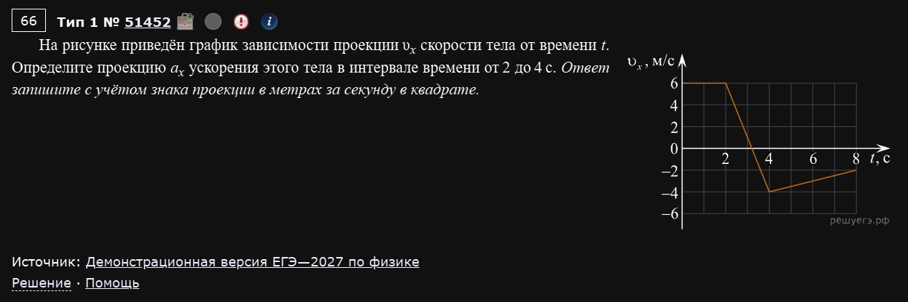
Один из прототипов - посчитать проекцию ускорения / скорости тела, исходя из графика. Здесь все довольно просто - нужно исходить из определения ускорения. В частности:
Про проекцию
Помните, что проекция ускорения / скорости вполне может быть отрицательной. В то же время, модуль этих величин не может быть отрицательным.
Пример 2)
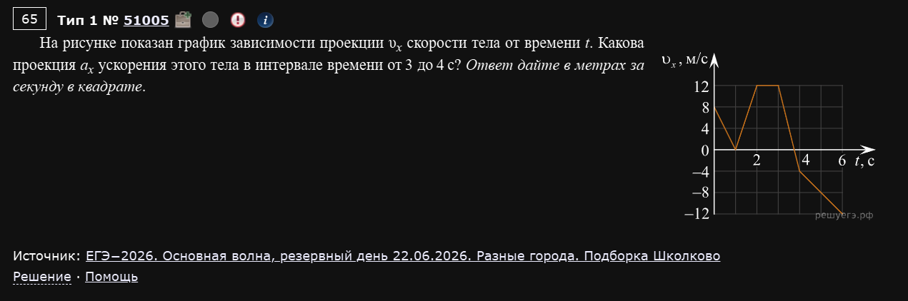
Аналогично первому примеру:
Пример 3)
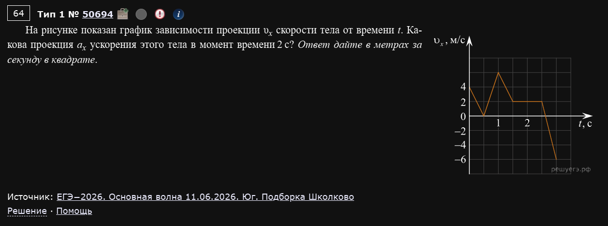
В вот тут подлянка. Обратите внимание на промежуток, который просят по задаче: “в момент времени 2с”. А на этом промежутке (с 1,5с до 2,5с) скорость тела не менялась. А значит, ускорение равно 0, по определению ускорения.
Удобство
Для удобства можете прямо в киме отмечать себе промежутки на графике. Это помогает уследить где именно вы ищите величину.
Пример 4)
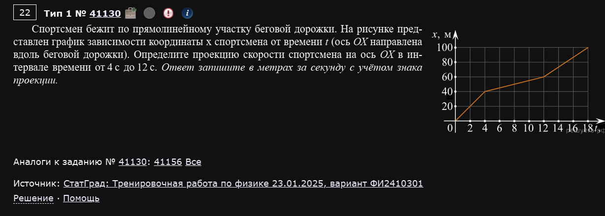
Дан график координаты от скорости, а просят найти проекцию скорости. Тут все просто. По определению:
Пример 5)
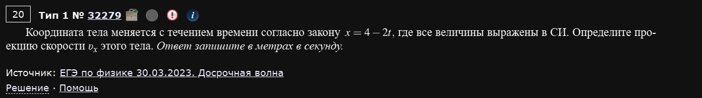
Редкий тип задач, с уравнением движения. Здесь дано уравнение зависимости координаты от времени, а просят найти проекцию скорости.
Есть два пути:
- Через производную
- Через общей вид уравнения движения
Первый путь
Из теории мы знаем, что скорость - есть производная от координаты. Следовательно:
Это и есть проекция скорости и наш ответ.
Второй путь
Вспомним общий вид уравнения движения при равномерном движении:
Т.е. наше - это и есть проекция скорости. А теперь сравним с нашим уравнением:
Видим, что , а . Таким образом, мы получили тот же ответ .
Пример 6)
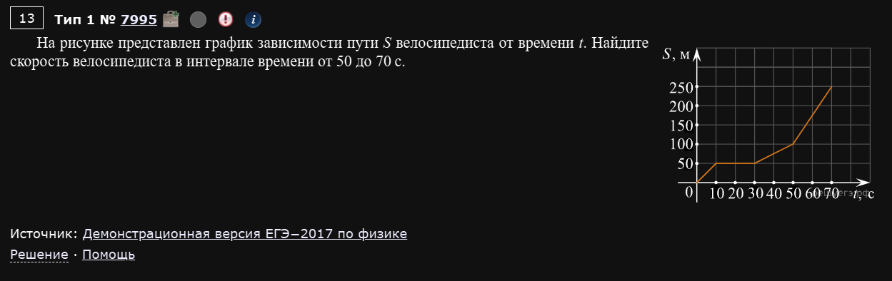
По поводу различий пути и координаты
Нужно очень внимательно следить за формулировкой. Координата, путь и перемещение - это разные вещи. Мы разберем все такие задача и постараемся уловить различие.
Здесь, однако, все по стандарту - просто найти скорость по определению.
Пример 7)
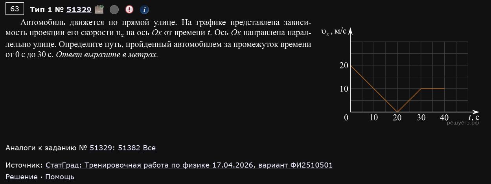
Довольно часто встречающийся прототип. Здесь нужно запомнить одно важное правило:
Графики производной величины
Если даны графики:
- Скорости от времени (а просят найти путь или перемещение)
- Тока от времени (а просят найти заряд)
- Магнитного потока от времени (а просят найти ЭДС)
То мы ищем площадь под графиком в заданных временных промежутках.
Это аллюзия на понятие интеграла в физике. Не будем о грустном, к задаче.
Наша цель - найти площадь под графиком в заданных временных промежутках т.е. от 0с до 30с.
Т.е. то, что нас интересует выглядит так:
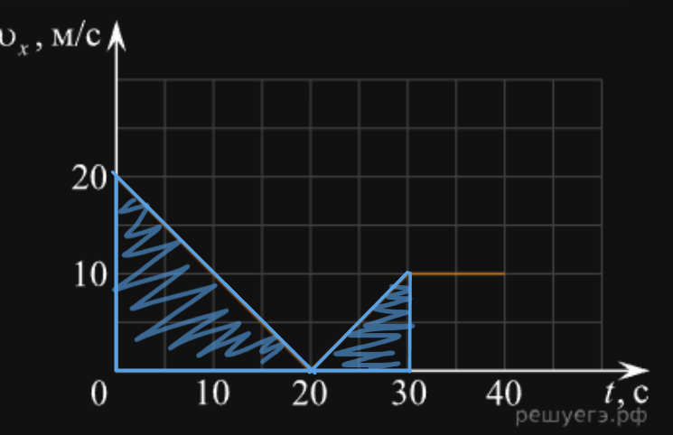
Здесь удобно поделить площадь на 2 треугольника и найти по формуле площади треугольника:
Пример 8)
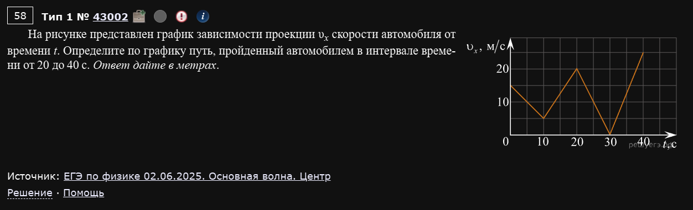
Полностью аналогично:
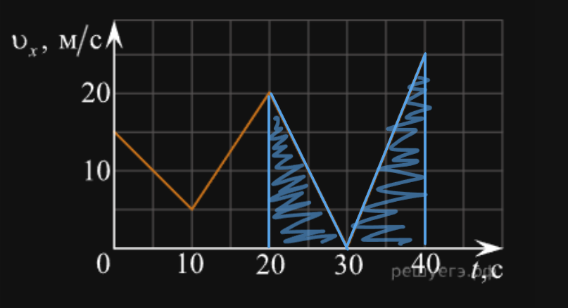
Пример 9)
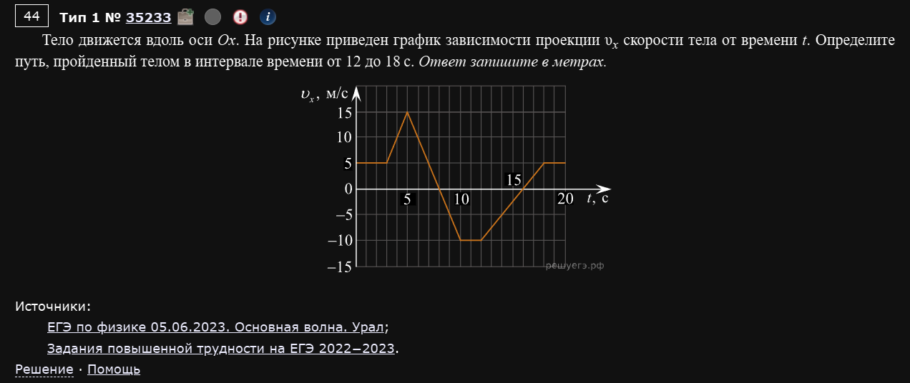
Тут небольшой нюанс: график уходит в отрицательную часть по оси Y.
Различие: путь и перемещение
Тут просят путь. Соответственно, площадь что в положительной части оси Y будет “положительна”, что в отрицательной. Т.е. вам не нужно вычитать одну площадь из другой, нужно просто сложить две площади.
Если же попросили бы перемещение - пришлось бы вычитать то, что снизу по оси Y. Это следует из определения перемещения.
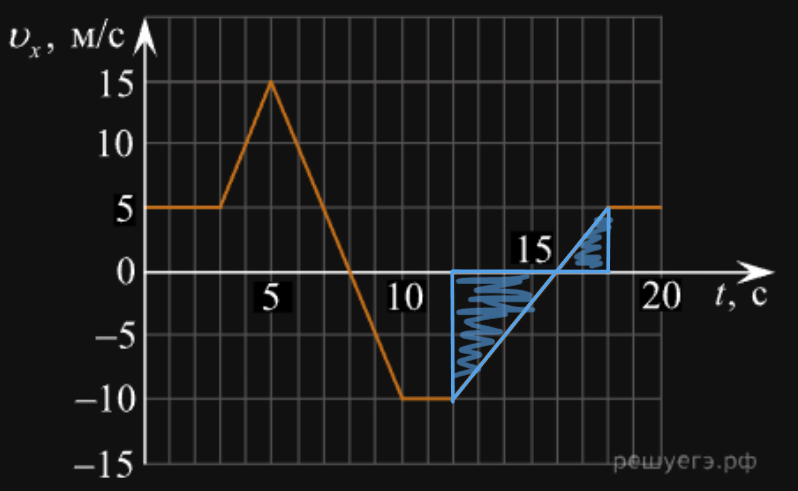
Пример 10)
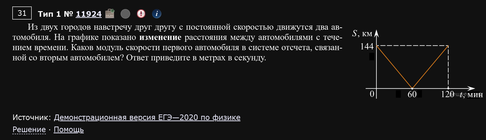
Иногда конкретно это задание всплывает в пробниках. Рекомендую знать его в лицо.
Здесь довольно странный вопрос, но если внимательно прочитать условие, то все встанет на свои места. Итак, вот эти две фразы:
На графике показано ИЗМЕНЕНИЕ расстояния между автомобилями
И
Каков модуль скорости первого автомобиля в системе отсчета, связанной со вторым автомобилем?
Дают нам следующую картину:
- На графике показано изменение расстояния между автомобилями (перемещение автомобилей друг относительно друга)
- Нас просят найти относительную скорость автомобилей
Вывод:
Раз расстояние относительно, а просят найти относительную скорость, то мы вполне можем работать с этими величинами привычным нам образом, а именно по формуле . Только здесь, естественно, имеется ввиду относительное расстояние () и относительная скорость ().
Таким образом, мы можем утверждать, что через 60 минут они встретились, ведь расстояние между ними стало 0. Стало быть:
Пример 11) (Демидова 2026, 1 вариант)
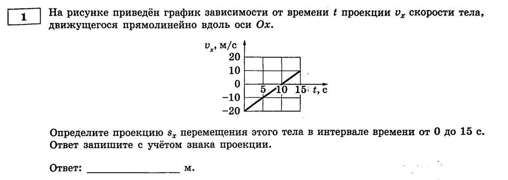
Вот о чем шла речь в примере 9. Здесь как раз просят найти проекцию ПЕРЕМЕЩЕНИЯ (а не пути, как было там).
Знак перемещения
Само перемещение не бывает отрицательным, а вот его ПРОЕКЦИЯ на какую-то ось - вполне может быть отрицательной величиной.
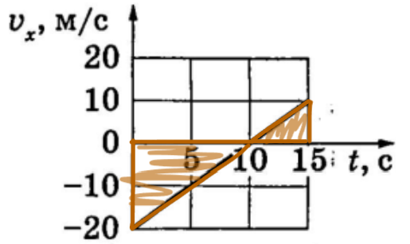
И вот здесь уже то, что снизу по оси Y - будет обладать отрицательным знаком. Т.е.:
Пример 12) (Демидова 2026, вариант 5)
Новый прототип: тело движется вдоль оси Ox, дан график , но просят не путь и не перемещение, а среднюю скорость на участке.
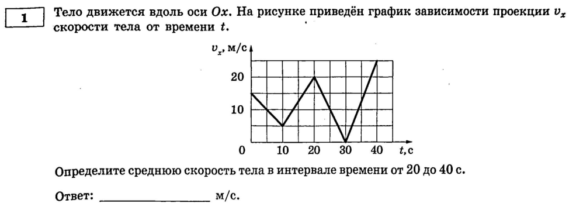
Точки графика: , , м/с (излом в каждой точке).
Определите среднюю скорость тела в интервале времени от 20 до 40 с.
Работаем как с перемещением (см. Пример 11) — считаем площадь под графиком на нужном участке (это и есть перемещение ), а в конце дополнительно делим на время участка. Тут скорость нигде не уходит в минус, так что просто складываем площади двух трапеций:
Новый шаг
Все примеры про площадь под графиком (7–9, 11) останавливались на самой площади (это путь или перемещение). Здесь появляется дополнительный шаг — поделить результат на длительность интервала, чтобы получить именно скорость (а не расстояние).
Пример 13) (Демидова 2026, вариант 15)
Похожий прототип, но с важным нюансом: дан график модуля скорости (не проекции ), и просят найти среднюю скорость.
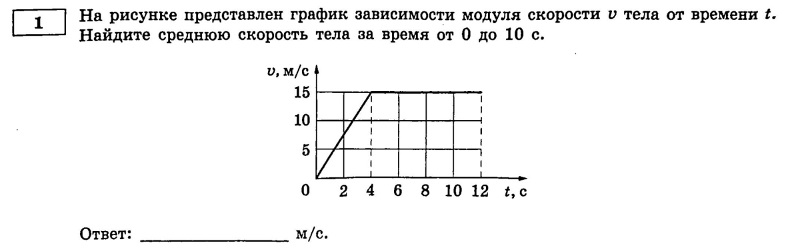
График: скорость линейно растёт от 0 до 15 м/с за время от 0 до 4 с, а затем остаётся постоянной (15 м/с) до 10 с и далее.
Найдите среднюю скорость тела за время от 0 до 10 с.
Поскольку график — это именно модуль скорости, он никогда не уходит в минус, и площадь под ним сразу даёт путь (а не перемещение с оговорками про знак). Считаем площадь треугольника и прямоугольника:
Скорость vs. модуль скорости
Если график — это проекция (как в Примере 12), при вычислении площади нужно следить за знаком (сегменты ниже оси — “отрицательная” площадь для перемещения). Если же график — это модуль скорости , он всегда неотрицателен, площадь под ним — это путь, и никакой возни со знаками не требуется.
Пример 14) (Демидова 2026, вариант 11)
Новый прототип: график ломаный (несколько участков с разным наклоном), и просят найти ускорение в конкретный момент времени (а не на интервале), причём этот момент — не тот случай, где ответ ноль.
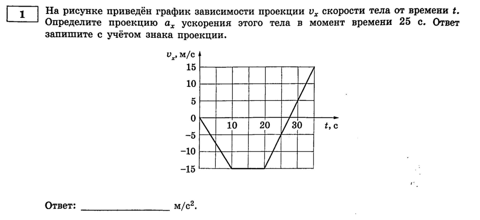
График: , тело равноускоренно тормозит до м/с, затем скорость постоянна до с ( м/с), а после этого снова линейно растёт и достигает м/с.
Определите проекцию ускорения этого тела в момент времени 25 с.
Первым делом нужно понять, какому участку графика принадлежит момент с. Это участок от 20 до 35 с (наклонный, а не горизонтальный!). Берём его концы и считаем наклон:
Отличие от Примера 3
В Примере 3 фишка была в том, что на заданном участке скорость не менялась, и ответ получался 0. Здесь участок другой — наклонный, и ответ ненулевой. Главное — не перепутать, к какому именно отрезку ломаной относится нужный момент времени, и уже потом брать точки именно этого отрезка.
Пример 15) (Демидова 2026, вариант 13)
Тот же прототип, что и в Примере 14, но график сложнее — несколько изломов подряд, и точку нужно поймать внимательнее.
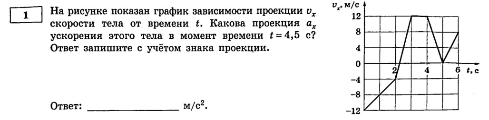
График: , , далее рост до (с изломом на пути наверх), затем горизонтальный участок до , после чего спад до , и снова рост до .
Какова проекция ускорения этого тела в момент времени с?
Момент 4,5 с попадает на участок спада — от () до ():
Удобство (снова)
Как и советовал раньше — отмечайте прямо на графике границы участков (тут это целые секунды: 2, 3, 4, 5, 6). Когда изломов много, легко случайно взять точки соседнего участка.
Пример 16) (Демидова 2026, вариант 25)
Совершенно новый прототип: дан график координаты (не скорости!), и просят найти перемещение. Никакой площади считать не нужно — координата уже сама по себе даёт ответ.
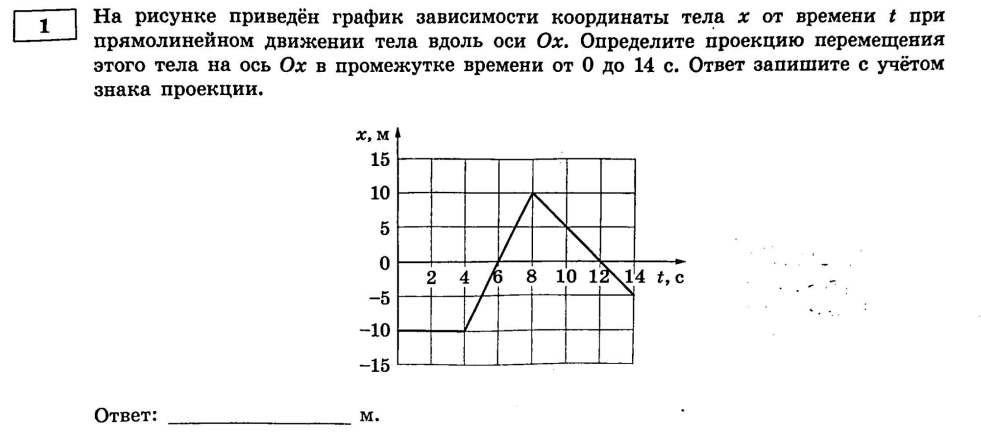
График: м (тело покоится до с), затем координата растёт до м, а после — убывает до м.
На рисунке приведён график зависимости координаты тела от времени при прямолинейном движении тела вдоль оси Ox. Определите проекцию перемещения этого тела на ось Ox в промежутке времени от 0 до 14 с.
По определению перемещения (а не пути!) достаточно просто вычесть значения координаты в конце и в начале интервала:
Не перепутать с графиком скорости!
Если дан график — для перемещения нужно считать площадь (см. Примеры 9, 11, 12). Но если дан график координаты — перемещение это просто разность двух значений , без какого-либо интегрирования. Это тот же тип графика, что и в Примере 4 (где спрашивали скорость через ) — только теперь не делим на время, потому что спрашивают не скорость, а перемещение. Всегда внимательно читайте, что именно просят найти.